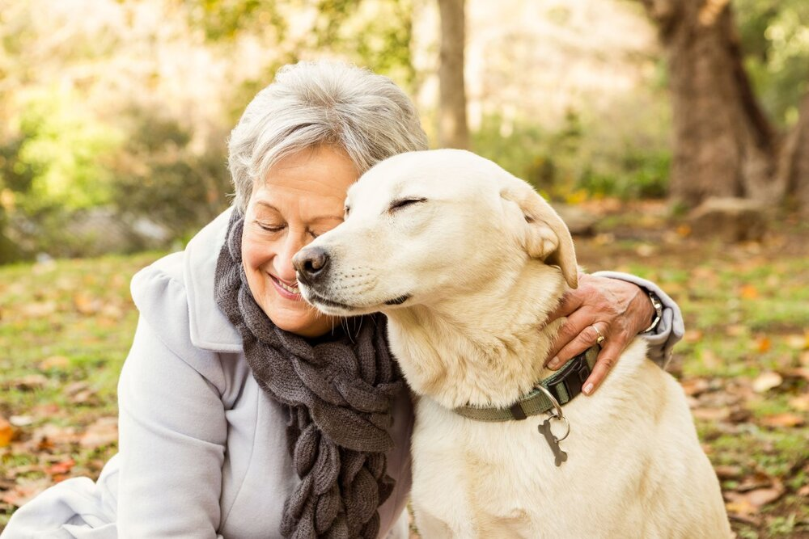

Our purpose ?
Welcome to our shelter ! Storth Shelter is a place where we save animals and wish to offer them a better life. All of our animals have had a rather difficult history. Some have been abandoned, collected and cared for by our volunteer veterinarians.
Have you found an abandoned or needy animal? Do not approach the animal and do not try to feed or move it. You can call us or contact the fire department. We will pick up the animal immediately.
Who are we ?


Dogs üêï
Turbo
Turbo is a young male of 3 years old. He is very friendly and loves children. He also is very active and needs a garden to play. His last owners couldn't keep him, so we take care of him while he waits for his new family. Therefore, he hasn't got any ilnesses or traumas.
Apex
Apex is a male about 6 years old. We’re not sure about his exact age and took him in six months ago. He was abandoned so we healed his wounds and got him back on his feet. His past had to be complicated because he didn’t come close to men. He needs a quiet home with no children.
Indra
Indra is a female of 6 and a half years old. She was a victim of a malformation and has no tail. She still remains extremely dynamic, and tends to try to run away regularly. We must not leave her unattended Moreover she likes children and other animals. She is reassured in the presence of another animal such as dogs, cats but also hamsters .
Cats üêà
Lulu
Lulu is a female of 8 years old and is very calm. Indeed, she has a heart murmur, which involves regular veterinary checks and daily treatment. A quiet home, with no garden, without too much agitation will be mandatory.
Amanda
Amanda is a 6 month old female. Although she is very cute she is blind. She cannot live outside, and must live in an apartment or house without a garden. She loves other cats very much because they guide and reassure her, especially when moving. She doesn’t like noise, children and dark places. .

Mars
Mars is a nearly 1 year old male. He comes from a litter of 6 kittens, but did not get along with his brothers and sisters. He had a tendency to attack them, in order to be the center of attention. Her family therefore decided that they could not keep him for the welfare of the other cats and kittens. Thus, he needs a family without any other animal, young childrens, and who has a lot of time to give to him.
Others little animals üêπ
Sparkle
Sparkle is a very emotional guinea pig of about 1 year old. We found him with his brothers in abandoned garbage on the side of a road. We managed to save them despite the lack of food. His two brothers have already been adopted, and only Sparkle is waiting for his new family. He is very calm, but needs a lot of love, because he sometimes cries when he is too lonely. We would like to find him, if possible, a home with another animal so that he feels more surrounded.